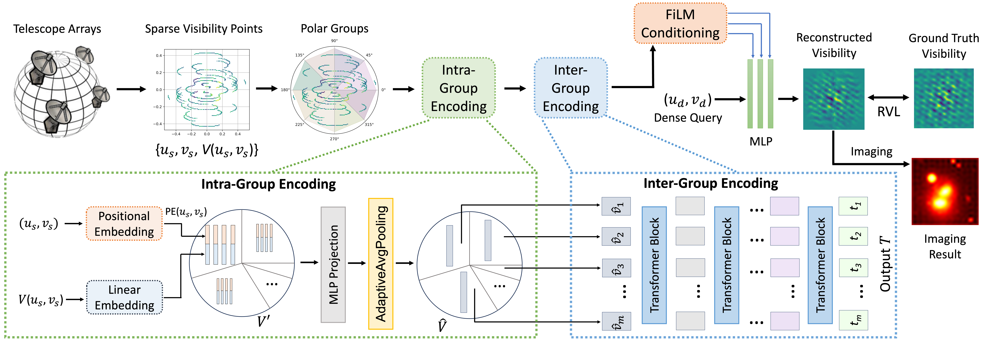

WANG Ruoqi (王若琪)
PhD Student
The Hong Kong University of Science and Technology (Guangzhou)
Guangzhou, China
Email:
rqwangrq@gmail.com
Email:
rwang280@connect.hkust-gz.edu.cn
Biography
I am a PhD candidate in Data Science and Analytics at The Hong Kong University of Science and Technology (GZ), advised by Prof. LUO Qiong. I received my B.Eng degree in Sun Yat-sen University in 2022, advised by Prof. WU Hejun. Recently I am working on AI for Science.I’m actively seeking postdoctoral opportunities starting Summer 2026. If my work aligns with your lab, I’d love to connect.
Education
The Hong Kong University of Science and Technology (Guangzhou), PhD student. [Sep. 2022 ~ ]- Program: Data Science and Analytics
- Major: Computer Science and Technology, School of Computer Science and Engineering.
Research Projects





Interests
I love tennis üéæ!As well as reading üìñ and traveling.